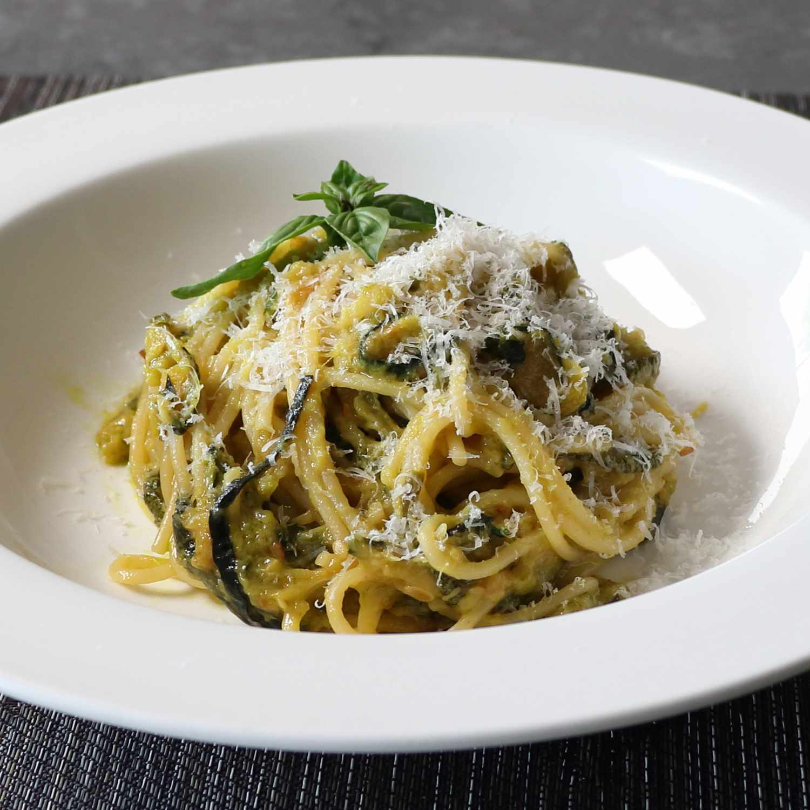

That Zucchini Spaghetti Stanley Tucci Loves (Spaghetti alla Nerano)

Prep Time: 20 mins
Cook Time: 35 mins
Additional Time: 8 hrs
Total Time: 8 hrs and 55 mins
Servings: 2
Description:
I'm certainly not against deep-frying and have posted many videos featuring the technique, but if there's a way to make a recipe without forcing someone to set up a fry station in there kitchen, I always try to figure out what that is. This time, there was no way. I tried to broil, bake, and pan fry, but none of the methods worked as well as the "authentic" cooking method shown in the show, which was to fry the sliced zucchini in sunflower oil until golden brown.
Please trust me when I tell you that the results are well worth the effort. This really was a truly amazing spaghetti, and while I've sauced pasta with zucchini before, I'd never done so by frying it first, and I was sort of shocked what a difference it makes. So, whether you need to go to the market to buy your summer squash or you're a gardener and have way more than you can ever use, I really do hope you give this zucchini pasta recipe a try soon. Enjoy!
Ingredients:
- 1 quart sunflower oil, or as needed
- 6 medium green zucchini
- 4 ounces spaghetti
- 2 tablespoons olive oil
- 1 pinch salt
- 2 basil leaves, torn into small pieces
- 2 tablespoons unsalted butter
- 5 tablespoons grated Pecorino Romano cheese
- 3 tablespoons grated Parmigiano-Reggiano cheese
Directions:
- Place sunflower oil in a deep fryer and heat to 350 degrees F (175 degrees C). Slice zucchini into 1/8-inch rounds.
- Add some zucchini to the hot oil and deep-fry until lightly browned, 4 to 5 minutes. Transfer to a single layer on paper towels to drain and repeat to cook remaining zucchini. Let zucchini cool to room temperature. Add some zucchini to the hot oil and deep-fry until lightly browned, 4 to 5 minutes. Transfer to a single layer on paper towels to drain and repeat to cook remaining zucchini. Let zucchini cool to room temperature.
- Transfer cooled zucchini to a bowl. Cover and refrigerate, 8 hours to overnight.
- Bring a large pot of lightly salted water to a boil. Cook spaghetti in the boiling water, stirring occasionally, until it's 2 minutes away from being tender yet firm to the bite, 9 to 10 minutes.
- As you are cooking the spaghetti, heat olive oil in a skillet over medium heat. Add zucchini and salt and cook, stirring occasionally, until it starts to release juices, soften, and break down, 3 to 5 minutes. Add a couple splashes of the pasta water to the zucchini, but don't overdo it. Break zucchini into small pieces with the edge of a spoon or spatula. Reduce heat to low and toss in basil and butter; stir until butter melts.
- Grab spaghetti with tongs and transfer it right into the sauce; stir until coated. Mix in Pecorino Romano and Parmigiano-Reggiano cheeses. Add a final splash of pasta water and adjust salt if needed.
- Serve with more grated cheese and fresh basil.
Home